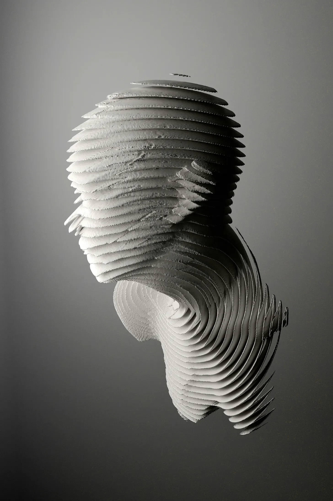

페이드 인:
내부. 마야의 스튜디오 - 밤
[FADE IN:
INT. MAYA’S STUDIO - NIGHT]
어둡게 조명된 개조된 창고. 선반에는 반쯤 완성된 조각상들이 줄지어 있다. 중앙에는 마야(35세)가 점토로 덮인 손으로 작업대 앞에 서 있다.
[A dimly lit converted warehouse. Shelves lined with half-finished sculptures. In the center, MAYA (35) stands before a workbench, her hands covered in clay.]
마야
(혼잣말로)
한 겹만 더…
[MAYA
(to herself)
Just one more layer…]
그녀는 조심스럽게 얇은 흰색 재료를 이상하고 물결치는 형태에 덧댄다.
[She carefully applies a thin sheet of white material to a strange, undulating form.]
마야의 손에 클로즈업하면, 새로운 층을 매끄럽게 제자리에 놓는다. 조각상은 추상적인 형태를 이루는 복잡하고 겹쳐진 층들의 연속이다.
[CLOSE UP on Maya’s hands as they smooth the new layer into place. The sculpture a series of intricate, overlapping layers forming an abstract shape.]
마야는 뒤로 물러서서 자신의 작품을 감상한다. 그녀는 이마를 닦으며 흰색 얼룩을 남긴다.
[Maya steps back, admiring her work. She wipes her brow, leaving a smudge of white.]
마야 (계속)
드디어. 끝났어.
[MAYA (CONT’D)
Finally. It’s done.]
그녀는 조각상을 빙 둘러보며 모든 각도에서 자세히 살펴본다. 그녀의 발자국 소리 외에는 스튜디오는 조용하다.
[She circles the sculpture, studying it from every angle. The studio is silent except for her footsteps.]
갑자기 부드러운 삐걱거리는 소리가 들린다. 마야는 얼어붙는다.
[Suddenly, a soft CREAKING sound. Maya freezes]
마야 (계속)
뭐야…
[MAYA (CONT’D)
What the…]
그녀는 조각상에 가까이 다가선다. 층 중 하나가 살짝 경련한다.
[She leans in close to the sculpture. One of the layers TWITCHES slightly.]
마야 (계속)
(숨을 헐떡이며)
말도 안 돼.
[MAYA (CONT’D)
(gasping)
Impossible.]
그 층은 다시 제자리로 돌아간다. 마야는 눈을 깜박이며 비비고 있다.
[The layer settles back into place. Maya blinks, rubbing her eyes.]
마야 (계속)
내가 생각했던 것보다 더 피곤한가 봐.
[MAYA (CONT’D)
I must be more tired than I thought.]
그녀는 몸을 돌려 스튜디오 구석의 작은 주방으로 향한다.
[She turns away, heading for the small kitchenette in the corner of the studio.]
내부. 마야의 스튜디오 - 주방 - 연속
[INT. MAYA’S STUDIO - KITCHENETTE - CONTINUOUS]
마야는 약간 떨리는 손으로 커피를 따른다. 그녀는 한 모금 마시고는 조각상을 보려고 뒤돌아본다.
[Maya pours herself a cup of coffee, her hands shaking slightly. She takes a sip, then turns back to look at the sculpture.]
이 거리에서 보면 완전히 가만히 있는 것처럼 보인다.
[From this distance, it appears completely still.]
마야
(중얼거리며)
정신 차려, 마야. 조각상은 움직이지 않아.
[MAYA
(muttering)
Get it together, Maya. Sculptures don’t move.]
그녀는 커피를 들고 작업대로 걸어간다.
[She walks back to the workbench, coffee in hand.]
내부. 마야의 스튜디오 - 작업대 - 연속
[INT. MAYA’S STUDIO - WORKBENCH - CONTINUOUS]
마야는 커피를 내려놓고 조각상을 자세히 살펴보려고 몸을 숙인다. 모든 게 정상으로 보인다.
[Maya sets down her coffee and leans in to examine the sculpture closely. Everything seems normal.]
그녀는 손을 뻗어 그것을 만지려고 한다-
[She reaches out to touch it-]
조각상이 부르르 떤다. 마야는 재빨리 손을 뒤로 뺀다.
[The sculpture SHIVERS. Maya jerks her hand back]
마야
아니. 아니야, 이런 일이 일어날 리 없어.
[MAYA
No. No, this isn’t happening.]
그녀는 떨리는 손가락으로 전화기를 더듬어 번호를 누른다.
[She fumbles for her phone, dialing with trembling fingers.]
마야 (계속)
(전화로)
천 박사님? 마야예요. 지금 제 스튜디오로 와 주셨으면 해요. 지금 당장요. 그게… 조각상에 관한 거예요.
[MAYA (CONT’D)
(into phone)
Dr. Chen? It’s Maya. I need you to come to my studio. Now. It's… it’s about the sculpture.]
내부. 마야의 스튜디오 - 그 후
[INT. MAYA’S STUDIO - LATER]
안경을 쓰고 의심스러워하는 천 박사(50세)가 확대경으로 조각상을 살펴본다.
[DR. CHEN (50), bespectacled and skeptical, examines the sculpture with a magnifying glass.]
천 박사
마야, 특별한 건 안 보이는데요. 인상적인 작품이긴 하지만-
[DR. CHEN
I don’t see anything unusual, Maya. It’s certainly an impressive piece, but-]
조각상이 물결친다. 천 박사가 뒤로 비틀거린다.
[The sculpture RIPPLES. Dr. Chen stumbles backward.]
천 박사 (계속)
세상에!
[DR. CHEN (CONT’D)
Good God!]
마야
박사님도 보셨죠?
[MAYA
You saw it too?]
천 박사는 말문이 막혀 고개를 끄덕인다. 그는 이번에는 더 조심스럽게 다시 조각상에 다가간다.
[Dr. Chen nods, speechless. He approaches the sculpture again, this time more cautiously.]
천 박사
흥미롭군요. 층들이 스스로 재정렬하는 것 같아요.
[DR. CHEN
Fascinating. The layers seem to be… realigning themselves.]
마야
하지만 어떻게요? 왜요?
[MAYA
But how? Why?]
천 박사는 어찌할 바를 모르고 고개를 젓는다.
[Dr. Chen shakes his head, at a loss]
천 박사
이런 건 처음 봅니다. 몇 가지 검사를 해봐야겠어요.
[DR. CHEN
I’ve never seen anything like this. We need to run some tests.]
몽타주:
[MONTAGE:]
천 박사가 조각상 주위에 다양한 과학 기구를 설치하고 있다.
마야는 초조하게 서성거리며 손톱을 물어뜯고 있다.
화면에 나타난 수치들의 클로즈업, 모두 비정상적인 데이터를 보여주고 있다.
조각상은 내내 미묘하게 형태를 변화시키고 있다.
[- Dr. Chen setting up various scientific instruments around the sculpture.
Maya pacing nervously, biting her nails.
Close-ups of readings on screens, all showing unusual data.
The sculpture subtly shifting its form throughout.]
몽타주 끝
[END MONTAGE]
내부. 마야의 스튜디오 - 새벽
[INT. MAYA’S STUDIO - DAWN]
마야와 천 박사는 장비들에 둘러싸인 채 의자에 풀썩 앉아있다. 조각상은 중앙에서 섬뜩할 정도로 고요히 서 있다.
[Maya and Dr. Chen sit slumped in chairs, surrounded by equipment. The sculpture stands eerily still in the center.]
천 박사
(눈을 비비며)
이해가 안 됩니다. 에너지 수치, 분자 구조… 우리가 알고 있는 물리학의 모든 것을 무시하고 있어요.
[DR. CHEN
(rubbing his eyes)
None of this makes sense. The energy readings, the molecular structure… it defies everything we know about physics.]
마야
그럼 우리가 뭘 해야 하죠?
[MAYA
So what do we do?]
천 박사가 대답하기도 전에, 조각상이 덜컹거린다. 층 중 하나가 바깥쪽으로 뻗어나와 마야를 향해 손을 뻗는다.
[Before Dr. Chen can answer, the sculpture LURCHES. One of its layers extends outward, reaching towards Maya.]
마야 (계속)
(비명을 지르며)
무슨 일이에요?
[MAYA (CONT’D)
(screaming)
What’s happening?]
그 층은 재빨리 다시 움츠러든다. 조각상 전체가 천천히 회전하기 시작하고, 층들은 이동하며 재정렬된다.
[The layer retracts just as quickly. The entire sculpture begins to rotate slowly, its layers shifting and realigning.]
천 박사
(경외감에 젖어)
진화하고 있어요.
[DR. CHEN
(in awe)
It's… evolving.]
마야는 조각상의 움직임에 사로잡혀 서 있다.
[Maya stands, transfixed by the sculpture’s movement.]
마야
아니에요, 이건… 소통하고 있어요.
[MAYA
No, it's… communicating.]
그녀는 손을 뻗어 조각상의 표면 바로 위에 손을 멈춘다. 층들은 복잡한 패턴을 만들며 반응한다.
[She reaches out, her hand hovering just above the sculpture’s surface. The layers ripple in response, creating intricate patterns]
천 박사
마야, 조심하세요!
[DR. CHEN
Maya, be careful!]
하지만 마야는 그의 말을 듣지 못한다. 그녀는 경이와 두려움으로 눈을 크게 뜬 채 조각상 층의 춤에 빠져들어 있다.
[But Maya doesn’t hear him. She’s lost in the dance of the sculpture’s layers, her eyes wide with wonder and fear.]
마야
(속삭이며)
당신은 내게 무엇을 말하려는 거죠?
[MAYA
(whispering)
What are you trying to tell me?]
조각상의 움직임은 더욱 격렬해지고, 층들은 점점 더 빠르게 소용돌이친다. 빛과 그림자가 조각상의 표면을 가로질러 어지러운 환영을 만들어낸다.
[The sculpture’s movement intensifies, its layers whirling faster and faster. Light and shadow play across its surface, creating dizzying illusions.]
천 박사는 마야의 팔을 잡아 그녀를 뒤로 잡아당긴다.
[Dr. Chen grabs Maya’s arm, pulling her back.]
천 박사
우리 나가야 해요. 당장!
[DR. CHEN
We need to leave. Now!]
마야는 저항하며, 시선은 조각상에 고정되어 있다.
[Maya resists, her gaze locked on the sculpture.]
마야
아니에요, 잠깐만요! 거의 이해할 것 같아요-
[MAYA
No, wait! I almost understand-]
조각상이 맥동하며 눈부신 빛을 발한다. 마야와 천 박사는 눈을 가린다.
[The sculpture PULSES, emitting a blinding flash of light. Maya and Dr. Chen shield their eyes.]
그들이 다시 바라보았을 때, 조각상은 마야가 처음 완성했을 때와 똑같이 움직임이 없다.
[When they look again, the sculpture is motionless, exactly as it was when Maya first finished it.]
마야 (계속)
(숨 가쁘게)
방금 무슨 일이 있었던 거죠?
[MAYA (CONT’D)
(breathless)
What just happened?]
천 박사는 어리둥절해하며 고개를 젓는다.
[Dr. Chen shakes his head, bewildered.]
천 박사
모르겠어요. 하지만 우리가 우리의 이해를 넘어선 무언가에 걸려 넘어진 것 같아요.
[DR. CHEN
I don’t know. But I think we’ve stumbled onto something… beyond our comprehension.]
마야는 조심스럽게 조각상에 다가가 손을 뻗는다. 그녀는 조각상의 표면을 만진다.
[Maya approaches the sculpture cautiously, her hand outstretched. She touches its surface.]
아무 일도 일어나지 않는다.
[Nothing happens.]
마야
(조각상에게)
당신은 대체 뭐죠?
[MAYA
(to the sculpture)
What are you?]
조각상은 침묵을 지키며, 그 신비로움을 복잡한 층 안에 잠금 처리한다.
[The sculpture remains silent, its mysteries locked within its intricate layers.]
페이드 아웃
[FADE TO BLACK]